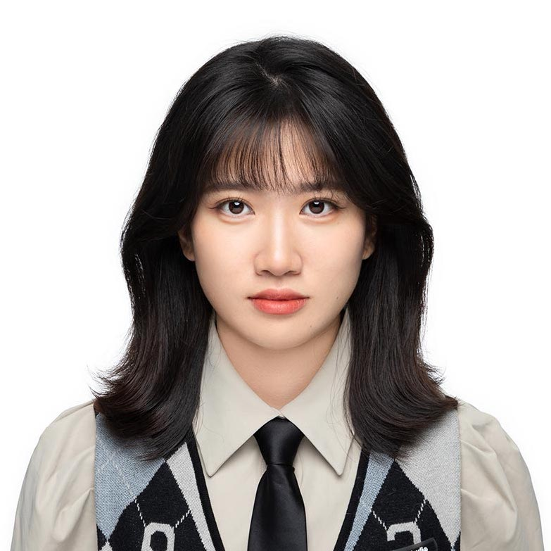

庄紫羽
15010615664
zhuangziyu1809@yeah.net
1996.04
个人总结
- 有三年的web端、移动端的UX设计经验，主导过互联网公司toB AI智能产品、营销平台、中台产品等企业级产品的交互设计，对AI类、营销类产品业务有较深入的理解和研究，能够快速理解商业背景、洞悉产品需求，并转化为用户体验目标和策略；
- 有从0到1构建企业级设计体系的经验，对设计协作及效率的提升有深入思考与实践；
- 在海外留学期间培养了批判性、辩证性、多元思考方式，擅长思辨设计和前瞻设计，具有跨文化设计背景，英语可作为第二工作语言和生活语言；
- 掌握服务设计理论知识，具有丰富的服务设计实践经验；
- 有3D建模基础，精通proE等3D建模软件。
教育经历
全球创新设计 硕士
产品设计与制造 本科
工作经历
UX交互设计师
- 业务覆盖：主导AI、营销、数据中台与协同平台的多方面体验设计，涵盖数据跟踪分析、业务对接、用户研究、架构与产出。
- 体系建立与维护：创建并维护企业级设计体系，规划设计价值与策略，维护设计规范。
- 创新设计：专注于设计规划与产品创新，通过竞品分析提炼设计方向。
- 问题解决：通过数据监测识别核心体验问题，制定策略并提出解决方案。
项目经历
交互设计师 设计部
- 独立主导营销平台UX设计，包括但不限于精准营销业务、广告投放业务等；
- 独立负责AI智能类、标签规则体系类、机器学习类解决方案的用户体验产品方案的设计
交互设计师 设计部
- 独立主导数据开发业务（大数据代码开发与分析）、精准营销业务（标签化与用户画像构建）的交互与UI设计；
- 核心参与产品全生命周期的各个阶段。如业务对接、用户研究、平台设计规范的制定、产品落地协同、数据分析验证等；
交互设计师 设计部
- 负责构建企业级设计体系，梳理设计开发协同流程与痛点，建立关键协同角色的用户画像，通过用户体验地图分析提炼出核心问题；
- 提出并参与决策协同平台的关键目标与核心功能，推动符合场景、提升效率的体验设计落地；核心负责产品的功能及信息架构设计，制定关键节点业绩指标并拆解体验设计任务；
其他
- 技能： Sketch，Principle，Figma，AI，PS，AE，Unity3D，C4D
- 语言： 英语（IELTS 7.0）